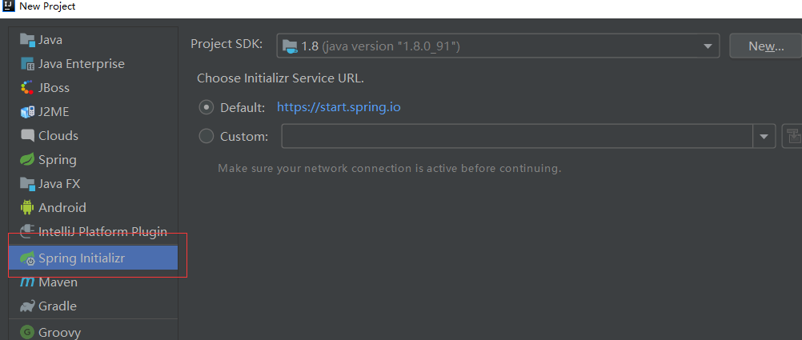
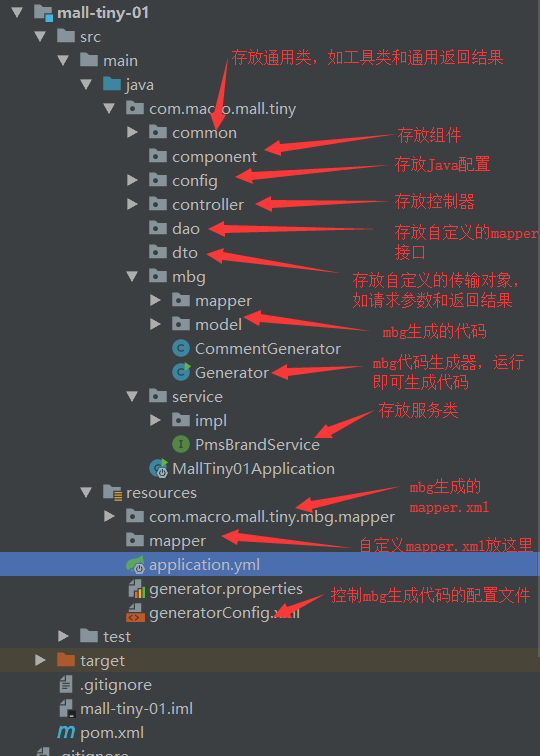

学习不走弯路，关注公众号 回复「学习路线」，获取mall项目专属学习路线！
mall整合SpringBoot+MyBatis搭建基本骨架
本文主要讲解mall整合SpringBoot+MyBatis搭建基本骨架，以商品品牌为例实现基本的CRUD操作及通过PageHelper实现分页查询。
mysql数据库环境搭建
- 下载并安装mysql5.7版本，下载地址：https://dev.mysql.com/downloads/installer/
- 设置数据库帐号密码：root root
- 下载并安装客户端连接工具Navicat,下载地址：http://www.formysql.com/xiazai.html
- 创建数据库mall
- 导入mall的数据库脚本，脚本地址：https://github.com/macrozheng/mall-learning/blob/master/document/sql/mall.sql
项目使用框架介绍
SpringBoot
SpringBoot可以让你快速构建基于Spring的Web应用程序，内置多种Web容器(如Tomcat)，通过启动入口程序的main函数即可运行。
PagerHelper
MyBatis分页插件，简单的几行代码就能实现分页，在与SpringBoot整合时，只要整合了PagerHelper就自动整合了MyBatis。
PageHelper.startPage(pageNum, pageSize);
//之后进行查询操作将自动进行分页
List<PmsBrand> brandList = brandMapper.selectByExample(new PmsBrandExample());
//通过构造PageInfo对象获取分页信息，如当前页码，总页数，总条数
PageInfo<PmsBrand> pageInfo = new PageInfo<PmsBrand>(list);
Druid
alibaba开源的数据库连接池，号称Java语言中最好的数据库连接池。
Mybatis generator
MyBatis的代码生成器，可以根据数据库生成model、mapper.xml、mapper接口和Example，通常情况下的单表查询不用再手写mapper。
项目搭建
使用IDEA初始化一个SpringBoot项目

添加项目依赖
在pom.xml中添加相关依赖。
<parent>
<groupId>org.springframework.boot</groupId>
<artifactId>spring-boot-starter-parent</artifactId>
<version>2.1.3.RELEASE</version>
<relativePath/> <!-- lookup parent from repository -->
</parent>
<dependencies>
<!--SpringBoot通用依赖模块-->
<dependency>
<groupId>org.springframework.boot</groupId>
<artifactId>spring-boot-starter-web</artifactId>
</dependency>
<dependency>
<groupId>org.springframework.boot</groupId>
<artifactId>spring-boot-starter-actuator</artifactId>
</dependency>
<dependency>
<groupId>org.springframework.boot</groupId>
<artifactId>spring-boot-starter-aop</artifactId>
</dependency>
<dependency>
<groupId>org.springframework.boot</groupId>
<artifactId>spring-boot-starter-test</artifactId>
<scope>test</scope>
</dependency>
<!--MyBatis分页插件-->
<dependency>
<groupId>com.github.pagehelper</groupId>
<artifactId>pagehelper-spring-boot-starter</artifactId>
<version>1.2.10</version>
</dependency>
<!--集成druid连接池-->
<dependency>
<groupId>com.alibaba</groupId>
<artifactId>druid-spring-boot-starter</artifactId>
<version>1.1.10</version>
</dependency>
<!-- MyBatis 生成器 -->
<dependency>
<groupId>org.mybatis.generator</groupId>
<artifactId>mybatis-generator-core</artifactId>
<version>1.3.3</version>
</dependency>
<!--Mysql数据库驱动-->
<dependency>
<groupId>mysql</groupId>
<artifactId>mysql-connector-java</artifactId>
<version>8.0.15</version>
</dependency>
</dependencies>
修改SpringBoot配置文件
在application.yml中添加数据源配置和MyBatis的mapper.xml的路径配置。
server:
port: 8080
spring:
datasource:
url: jdbc:mysql://localhost:3306/mall?useUnicode=true&characterEncoding=utf-8&serverTimezone=Asia/Shanghai
username: root
password: root
mybatis:
mapper-locations:
- classpath:mapper/*.xml
- classpath*:com/**/mapper/*.xml
项目结构说明

Mybatis generator 配置文件
配置数据库连接，Mybatis generator生成model、mapper接口及mapper.xml的路径。
<?xml version="1.0" encoding="UTF-8"?>
<!DOCTYPE generatorConfiguration
PUBLIC "-//mybatis.org//DTD MyBatis Generator Configuration 1.0//EN"
"http://mybatis.org/dtd/mybatis-generator-config_1_0.dtd">
<generatorConfiguration>
<properties resource="generator.properties"/>
<context id="MySqlContext" targetRuntime="MyBatis3" defaultModelType="flat">
<property name="beginningDelimiter" value="`"/>
<property name="endingDelimiter" value="`"/>
<property name="javaFileEncoding" value="UTF-8"/>
<!-- 为模型生成序列化方法-->
<plugin type="org.mybatis.generator.plugins.SerializablePlugin"/>
<!-- 为生成的Java模型创建一个toString方法 -->
<plugin type="org.mybatis.generator.plugins.ToStringPlugin"/>
<!--可以自定义生成model的代码注释-->
<commentGenerator type="com.macro.mall.tiny.mbg.CommentGenerator">
<!-- 是否去除自动生成的注释 true：是 ： false:否 -->
<property name="suppressAllComments" value="true"/>
<property name="suppressDate" value="true"/>
<property name="addRemarkComments" value="true"/>
</commentGenerator>
<!--配置数据库连接-->
<jdbcConnection driverClass="${jdbc.driverClass}"
connectionURL="${jdbc.connectionURL}"
userId="${jdbc.userId}"
password="${jdbc.password}">
<!--解决mysql驱动升级到8.0后不生成指定数据库代码的问题-->
<property name="nullCatalogMeansCurrent" value="true" />
</jdbcConnection>
<!--指定生成model的路径-->
<javaModelGenerator targetPackage="com.macro.mall.tiny.mbg.model" targetProject="mall-tiny-01\src\main\java"/>
<!--指定生成mapper.xml的路径-->
<sqlMapGenerator targetPackage="com.macro.mall.tiny.mbg.mapper" targetProject="mall-tiny-01\src\main\resources"/>
<!--指定生成mapper接口的的路径-->
<javaClientGenerator type="XMLMAPPER" targetPackage="com.macro.mall.tiny.mbg.mapper"
targetProject="mall-tiny-01\src\main\java"/>
<!--生成全部表tableName设为%-->
<table tableName="pms_brand">
<generatedKey column="id" sqlStatement="MySql" identity="true"/>
</table>
</context>
</generatorConfiguration>
运行Generator的main函数生成代码
package com.macro.mall.tiny.mbg;
import org.mybatis.generator.api.MyBatisGenerator;
import org.mybatis.generator.config.Configuration;
import org.mybatis.generator.config.xml.ConfigurationParser;
import org.mybatis.generator.internal.DefaultShellCallback;
import java.io.InputStream;
import java.util.ArrayList;
import java.util.List;
/**
* 用于生产MBG的代码
* Created by macro on 2018/4/26.
*/
public class Generator {
public static void main(String[] args) throws Exception {
//MBG 执行过程中的警告信息
List<String> warnings = new ArrayList<String>();
//当生成的代码重复时，覆盖原代码
boolean overwrite = true;
//读取我们的 MBG 配置文件
InputStream is = Generator.class.getResourceAsStream("/generatorConfig.xml");
ConfigurationParser cp = new ConfigurationParser(warnings);
Configuration config = cp.parseConfiguration(is);
is.close();
DefaultShellCallback callback = new DefaultShellCallback(overwrite);
//创建 MBG
MyBatisGenerator myBatisGenerator = new MyBatisGenerator(config, callback, warnings);
//执行生成代码
myBatisGenerator.generate(null);
//输出警告信息
for (String warning : warnings) {
System.out.println(warning);
}
}
}
添加MyBatis的Java配置
用于配置需要动态生成的mapper接口的路径
package com.macro.mall.tiny.config;
import org.mybatis.spring.annotation.MapperScan;
import org.springframework.context.annotation.Configuration;
/**
* MyBatis配置类
* Created by macro on 2019/4/8.
*/
@Configuration
@MapperScan("com.macro.mall.tiny.mbg.mapper")
public class MyBatisConfig {
}
实现Controller中的接口
实现PmsBrand表中的添加、修改、删除及分页查询接口。
package com.macro.mall.tiny.controller;
import com.macro.mall.tiny.common.api.CommonPage;
import com.macro.mall.tiny.common.api.CommonResult;
import com.macro.mall.tiny.mbg.model.PmsBrand;
import com.macro.mall.tiny.service.PmsBrandService;
import org.slf4j.Logger;
import org.slf4j.LoggerFactory;
import org.springframework.beans.factory.annotation.Autowired;
import org.springframework.stereotype.Controller;
import org.springframework.validation.BindingResult;
import org.springframework.web.bind.annotation.*;
import java.util.List;
/**
* 品牌管理Controller
* Created by macro on 2019/4/19.
*/
@Controller
@RequestMapping("/brand")
public class PmsBrandController {
@Autowired
private PmsBrandService demoService;
private static final Logger LOGGER = LoggerFactory.getLogger(PmsBrandController.class);
@RequestMapping(value = "listAll", method = RequestMethod.GET)
@ResponseBody
public CommonResult<List<PmsBrand>> getBrandList() {
return CommonResult.success(demoService.listAllBrand());
}
@RequestMapping(value = "/create", method = RequestMethod.POST)
@ResponseBody
public CommonResult createBrand(@RequestBody PmsBrand pmsBrand) {
CommonResult commonResult;
int count = demoService.createBrand(pmsBrand);
if (count == 1) {
commonResult = CommonResult.success(pmsBrand);
LOGGER.debug("createBrand success:{}", pmsBrand);
} else {
commonResult = CommonResult.failed("操作失败");
LOGGER.debug("createBrand failed:{}", pmsBrand);
}
return commonResult;
}
@RequestMapping(value = "/update/{id}", method = RequestMethod.POST)
@ResponseBody
public CommonResult updateBrand(@PathVariable("id") Long id, @RequestBody PmsBrand pmsBrandDto, BindingResult result) {
CommonResult commonResult;
int count = demoService.updateBrand(id, pmsBrandDto);
if (count == 1) {
commonResult = CommonResult.success(pmsBrandDto);
LOGGER.debug("updateBrand success:{}", pmsBrandDto);
} else {
commonResult = CommonResult.failed("操作失败");
LOGGER.debug("updateBrand failed:{}", pmsBrandDto);
}
return commonResult;
}
@RequestMapping(value = "/delete/{id}", method = RequestMethod.GET)
@ResponseBody
public CommonResult deleteBrand(@PathVariable("id") Long id) {
int count = demoService.deleteBrand(id);
if (count == 1) {
LOGGER.debug("deleteBrand success :id={}", id);
return CommonResult.success(null);
} else {
LOGGER.debug("deleteBrand failed :id={}", id);
return CommonResult.failed("操作失败");
}
}
@RequestMapping(value = "/list", method = RequestMethod.GET)
@ResponseBody
public CommonResult<CommonPage<PmsBrand>> listBrand(@RequestParam(value = "pageNum", defaultValue = "1") Integer pageNum,
@RequestParam(value = "pageSize", defaultValue = "3") Integer pageSize) {
List<PmsBrand> brandList = demoService.listBrand(pageNum, pageSize);
return CommonResult.success(CommonPage.restPage(brandList));
}
@RequestMapping(value = "/{id}", method = RequestMethod.GET)
@ResponseBody
public CommonResult<PmsBrand> brand(@PathVariable("id") Long id) {
return CommonResult.success(demoService.getBrand(id));
}
}
添加Service接口
package com.macro.mall.tiny.service;
import com.macro.mall.tiny.mbg.model.PmsBrand;
import java.util.List;
/**
* PmsBrandService
* Created by macro on 2019/4/19.
*/
public interface PmsBrandService {
List<PmsBrand> listAllBrand();
int createBrand(PmsBrand brand);
int updateBrand(Long id, PmsBrand brand);
int deleteBrand(Long id);
List<PmsBrand> listBrand(int pageNum, int pageSize);
PmsBrand getBrand(Long id);
}
实现Service接口
package com.macro.mall.tiny.service.impl;
import com.github.pagehelper.PageHelper;
import com.macro.mall.tiny.mbg.mapper.PmsBrandMapper;
import com.macro.mall.tiny.mbg.model.PmsBrand;
import com.macro.mall.tiny.mbg.model.PmsBrandExample;
import com.macro.mall.tiny.service.PmsBrandService;
import org.springframework.beans.factory.annotation.Autowired;
import org.springframework.stereotype.Service;
import java.util.List;
/**
* PmsBrandService实现类
* Created by macro on 2019/4/19.
*/
@Service
public class PmsBrandServiceImpl implements PmsBrandService {
@Autowired
private PmsBrandMapper brandMapper;
@Override
public List<PmsBrand> listAllBrand() {
return brandMapper.selectByExample(new PmsBrandExample());
}
@Override
public int createBrand(PmsBrand brand) {
return brandMapper.insertSelective(brand);
}
@Override
public int updateBrand(Long id, PmsBrand brand) {
brand.setId(id);
return brandMapper.updateByPrimaryKeySelective(brand);
}
@Override
public int deleteBrand(Long id) {
return brandMapper.deleteByPrimaryKey(id);
}
@Override
public List<PmsBrand> listBrand(int pageNum, int pageSize) {
PageHelper.startPage(pageNum, pageSize);
return brandMapper.selectByExample(new PmsBrandExample());
}
@Override
public PmsBrand getBrand(Long id) {
return brandMapper.selectByPrimaryKey(id);
}
}
项目源码地址
https://github.com/macrozheng/mall-learning/tree/master/mall-tiny-01
公众号